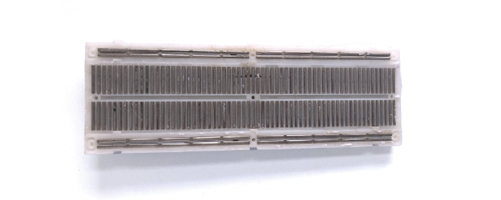
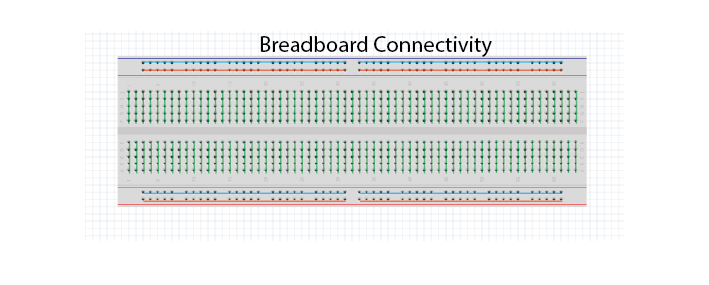
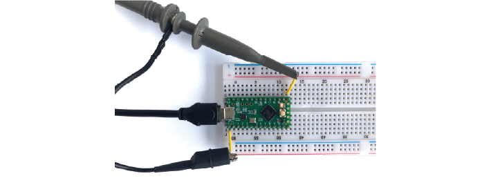
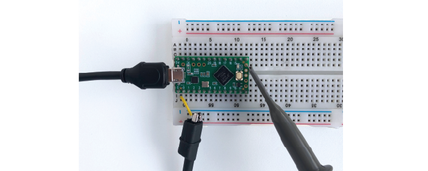
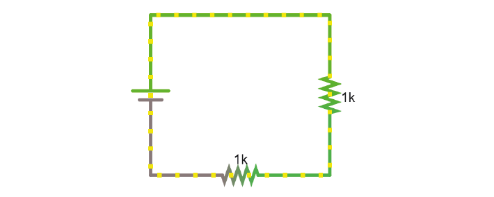
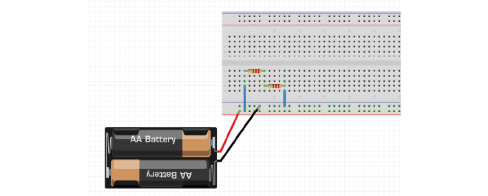
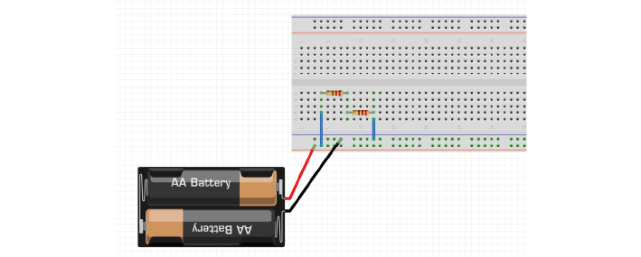
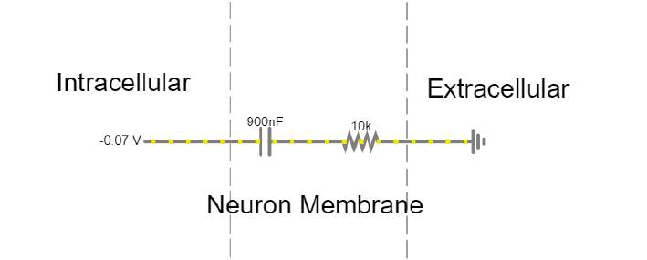
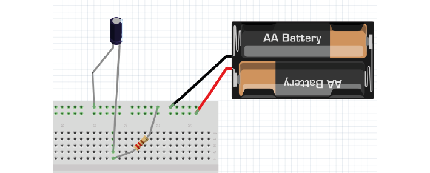
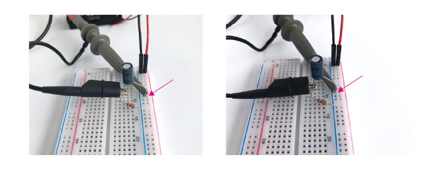

Exercises Day 1#
1. Using a multimeter#
Setup:
Make sure the multimeter has 2x AAA batteries installed.
Put the red probe in the port marked ‘VmAuA’ to indicate you want to measure Voltage (V), milliAmps (mA), and Resistance (Ohms). We won’t use it in this course, but the 10Amax port can be used to measure high currents.
Insert the black probe in the port marked COM (= Common, which will be your ground).
1A. Set the multimeter dial to ‘Ω’. Use your multimeter to measure the resistance of any 3 different resistors in the kit. Check whether the resistance values you read correspond to the coloured bands on the resistors. How is your multimeter measuring this resistance?
1B. Now set your multimeter to measure the voltage across a AA battery. What voltage do you measure? What does it mean if you record a negative voltage?
Solderless Breadboard#
We are going to build many circuits during this course using components such as resistors, capacitors, and amplifiers. We are going to use a solderless breadboard to form an electrically conductive connection between these components.
Below is an example breadboard with the backing peeled off, to show what happens inside. Each hole in the breadboard provides access to a metal bar. Inserting a component into the hole connects it electrically to any other component that touches the same bar. Batteries or a different type of power supply are connected to the long ‘rails’ that run along the side of the board, to power the circuit.
 The most important thing is to remember which holes are connected. Your long breadboard is actually made up of two separate breadboards; as you can see above, the power rails run through rows 0-30 and 31-60. If you want to use the entire length of the breadboard, you will have to connect these rails together with wires.
If you need to, refer back to the reading material for the overview on how to use a breadboard, it also includes some basic troubleshooting which may prove useful if you run into problems.
Teensy Microcontroller#
In your kit you will find a Teensy LC. This is a microcontroller, like an Arduino (just a different brand). It is basically a small computer, that can only run 1 program at a time. Using the USB cable provided, you can upload a new programme to the Teensy. Whenever the Teensy is provided with a power source it will try to run that programme.
The Teensy can perform many different functions, such as generating output voltages or collecting input signals. To do so, it has specialised connectors around the edges of the board. These are called ‘vias’ or ‘pins’. The ‘pinout’ below tells you what each pin of the Teensy can do. For instance, the pin marked ‘20’ on the board is Digital Pin 20 (grey) and Analog pin 6.

It’s important to distinguish between:
Ground pins (GND)
Analog pins, that can read varying voltages, such as a wave.
Digital pins, that can read or write HIGH or LOW values.
Some pins can perform multiple functions. For instance, the pin marked ‘20’ on the board is Digital Pin 20 (grey) and Analog pin 6.
Warning
We’re going to attach the Teensy to our solderless breadboard. Removing and replacing the teensy can sometimes bend the pins, so we’re going to leave it here for the whole course. If you do have to remove the teensy from the board, never hold it by the USB port, as it can easily snap off and can’t be fixed!
Setup:
Attach the teensy to the left of your breadboard as shown above. If you make sure the breadboard is in the same orientation as this schematic, it will make the following exercises easier to follow.
Use the USB to micro-USB cable in your kit to connect the Teensy to your computer.
The Teensy comes with a default programme already loaded onto the board, so you should see the LED on the board start to blink slowly as soon as it is powered on.
1C. We can see that digital pin 13 has (LED) written beside it. Attach readout wires to the breadboard, and use your multimeter to find the voltage across the LED.
2. Using an oscilloscope#
Oscilloscopes let us measure time-varying voltages with much higher time resolution than the multimeter.
Setup:
Your Picoscope comes with two probes, you only need one. Connect it to the ‘A’ port on your oscilloscope.
Set the slider on the probe itself to ‘1x’.
Connect your PicoScope to your computer and open up the Picoscope software.
2A. Use the PicoScope to measure the blink signal at the readout wires, as you did with your multimeter. Make sure you play around to find nice X and Y scaling. What shape & amplitude does the signal have?
If you see something odd, check:
x-axis scaling (ms/div)
y-axis scaling (Auto doesn’t always work)
whether it is set to DC (direct current) or AC (alternating current).
Setup part 2:
We’ll now upload a program that outputs a sine wave, instead of a blink.
Open the Arduino Software Upload the following code to your teensy: Sinewave
Make sure that under ‘Tools/ Board’ your Teensy 3.2 has been found, and check which USB (COM) port it’s in (‘Tools/Port:).
If you see ‘Done Uploading’, the Teensy will start giving a sine wave as output from one of the analog output pins.
2B. Connect your oscilloscope probe to A12 and visualise the signal in your PicoScope software.
3. Ohm’s Law#
During this course, we’ll be using a circuit simulator to build circuits online. This allows us to quickly test our ideas and understanding, and make predictions about what will happen when we build the circuit in real life.
Ohm’s law describes how potential (V), current (I) and resistance (R) are related:
When looking at a whole circuit, we can use this to calculate how much current will flow. Here is a simple circuit with a battery and two resistors. Current flows from the positive terminal of the battery to the negative terminal of the battery. The resistors are ‘in series’ as there is only 1 path for current flow.
3A. Click on the image to go to the simulator. Right-click on the top wire in the circuit, and then select Edit to display the current through that wire. Double-click on either of the resistors to decrease their value. What happens to the current in the circuit?
4. Resistors#
Here’s another simulation demonstrating Ohm’s law. This time, the current moves from a 5 Volt voltage source (bright green) into ground (grey, earth), across one of two resistors. The resistors are ‘in parallel’ as current can flow cross over one or the other resistor.

Setup:
Click the image open the simulator.
Right click on a resistor and select ‘View in new scope’.
Do the same for the other resistor. You can click ‘Reset’ to restart the simulation and synchronise the scopes.
4A. What do you predict will happen to the voltage over the left resistor if you double its resistance? What will happen to the current?
4B. What will happen to the voltage and current over the right-hand resistor when the other doubles in resistance?
Now double the value of the left-hand resistor in the simulator and see if your predictions were correct.
5. Voltage Divider#
In simulator#
Voltage is always measured relative to a point that we consider 0V. For a battery, the negative terminal is 0V.
Voltage (potential energy) ‘drops’ over each resistor, as potential energy is converted to another form of energy such as heat or light. In a circuit powered by a 9V battery, all 9V of potential energy from our battery source must drop over circuit components, to return to 0V at the negative terminal of the battery.
In each circuit below, the current through R1 must equal the current through R2, as they are resistors in series. Following Ohm’s law, given the same current, a higher resistor will have a higher voltage drop (V=IR). The total voltage drop over the circuit must equal the provided voltage.

Therefore, in a circuit with multiple resistors in series, the ratio of their resistances determines how much voltage will drop over each. We can therefore split up (divide) the voltage from a source across resistors to produce an output voltage Vout:
5A. Using the simulator (here’s an empty full-screen https://tinyurl.com/y477e9qd) build a voltage divider circuit in which you use:
a 3V battery (‘Draw’ a 1-terminal voltage source set to 3V)
2 resistors
a readout wire (right click and ‘Edit’ to show the voltage Vout)
To provide an 2.1V output voltage Vout at the readout wire.
On breadboard#
We’ll now build the circuit you just designed in real life, using a solderless breadboard.
5B. Use the battery holder and two AA batteries to create a 3V source. Use any two resistors from your kit to build a voltage divider, as shown below. If your multimeter doesn’t fit in the breadboard holes, you can place a short piece of ‘readout’ wire at each point you want to measure.
 

Bonus exercise: Replace one of the resistors to make your output voltage as small as you can get it. What’s the smallest reading you can still pick up with your multimeter? How does this compare to the amplitude of a spike measured in the extracellular space?
6. Capacitors#
Warning
Always check whether your capacitors are polarised or non-polarised.
Polarised capacitors must be used in a specific orientation. Usually, ceramic (the yellow ones in your kit) capacitors are not polarised and you can use them in either direction, whereas tube-shaped electrolytic capacitors (the black and blue ones in your kit) are polarised. The negative pin is indicated by a ‘-’ marking, and the positive leg is often longer.
As discussed in the Theory handout, capacitors occur wherever charge can be separated along two conducting surfaces, separated by an insulating material that prevents the plates from touching. Cell membranes are capacitors, as are electrodes.
The amount of charge (Q) a capacitor can separate depends on is its capacitance (C, measured in farads) and the voltage (V) across the capacitor.
Setup:
The simulator shows a simplified ‘cell membrane’ represented as a capacitor and a resistor. Changing the intracellular voltage supply changes the voltage across the cell membrane. The extracellular fluid is always 0 V.
6A. The initial voltage over the capacitor should be -72mV. If not, set the Voltage slider to around -70mV. Click ‘Reset’ to see current move through the circuit until the capacitor is charged to 72mV. Which direction is the current flow? Why does current stop moving?
6B. Using the ‘Voltage’ slider, set the voltage supply to 0 mVolts, and then to 20mV. What happens to the current flow in the circuit?
6C. Can you mimic an action potential by changing the intracellular voltage?
Setup:
Using the breadboard, build a circuit to charge and discharge one of the large capacitors in your kit. Use a 2.2KOhm resistor.
 6D. You will need to move the + leg of the cap (where the oscilloscope probe is) between GND and +3V. In the schematic, the + leg is connected to GND; it is discharging. The photo shows it connected to +3V (left) and connected to GND (right). When you move it, you should see it charge and discharge in your PicoScope trace. How long does it take for the capacitor to charge?
6E. Increase the value of the resistor. What does this change in your trace? Can you explain why?
7. Alternating signal (AC)#
Batteries provide ‘direct current’ in a single direction. In contrast, the action potentials and LFPs we measure from neurons can go in both directions; they are alternating currents. You produced an alternating current yourself in exercise 6C.
Alternating currents have a frequency, which is the rate at which they alternate direction. Action potentials have a very high frequency, whereas synaptic inputs and their sums are much slower.
Here is a demo where an alternating signal increases and decreases in frequency. At the bottom of the page, you can see the wave visualised.
Note
When you have capacitors in the simulator, it is a good idea to click ‘reset’ whenever you make changes, as they will otherwise store charge and can create weird effects.
7A. Press ‘Play Audio’ to hear how the sound is modulated as the frequency increases.

8. Impedance#
Alternating currents have a frequency, so we need to use the term ‘Impedance’ (Z) instead of ‘Resistance’ to describe how circuit components oppose current flow. See the theory handout for more information.
The impedance magnitude of a capacitor, also called reactance (Xc), depends on:
Where f is the frequency with which the current alternates, and C is the capacitance.
The impedance provided by capacitors varies with frequency. Because we are interested in signals at specific frequencies (e.g. 1000Hz for action potentials), we have to make sure to build our recording circuit so that the frequencies we are interested in experience little opposition.
When you see a capacitor in a circuit, you know you need to think about the frequency of the signal. Steady direct current has no frequency, so Xc is infinite: capacitors only pass alternating signals.

Setup:
Here are two circuits with an alternating voltage source of 15 and 40 Hz, respectively. In the oscilloscope at the bottom of the simulator, the voltage trace of the source and the capacitor are plotted.
8A. Visualise the current in the circuit (for instance the current flowing through the stretch of wire). You could add a new scope to do this or double-click the wire and ‘show current’. Which circuit has higher amplitude current?
8B. Add a third circuit, powered by an alternating voltage source of 120 Hz. What happens to the current as the frequency increases?
(Bonus question: what happens to the voltage drop across the capacitor as frequency increases?)
9. Capacitive voltage divider#
Because capacitors impede current flow, we can use them to build voltage dividers, just like the resistor divider shown above.

9A. Change the capacitance values C for the first capacitor to test whether the formula for the resistor voltage divider applies for capacitors.